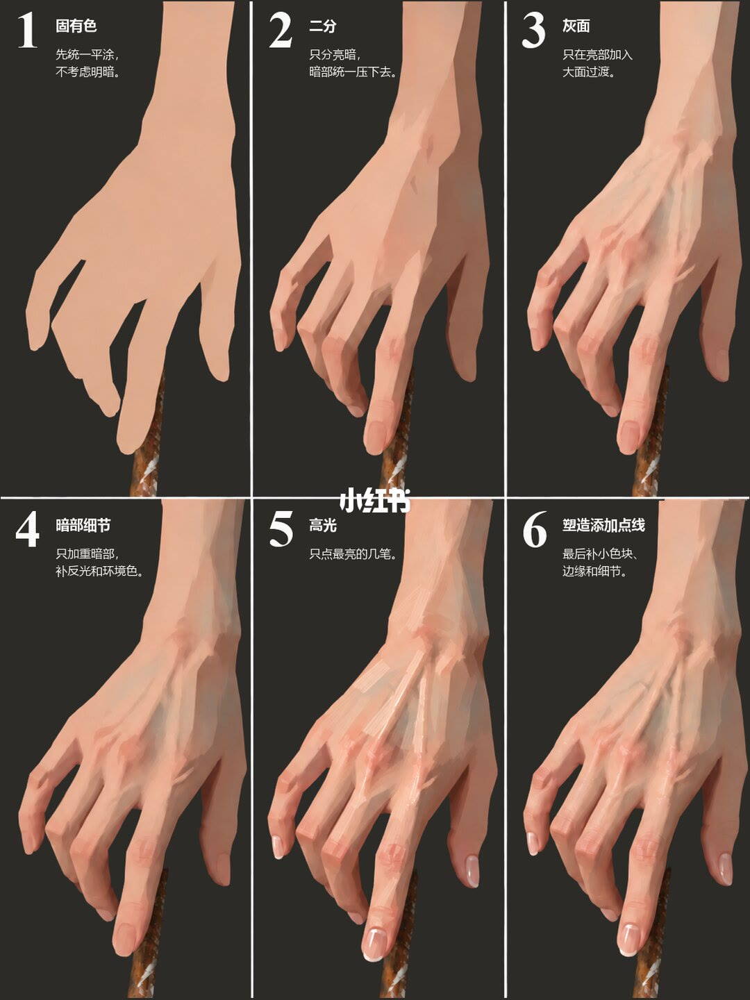
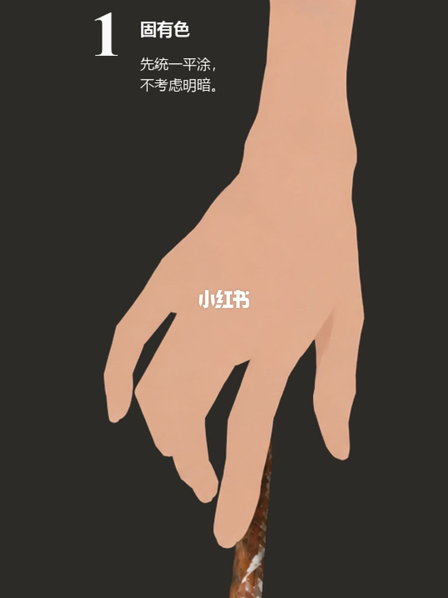
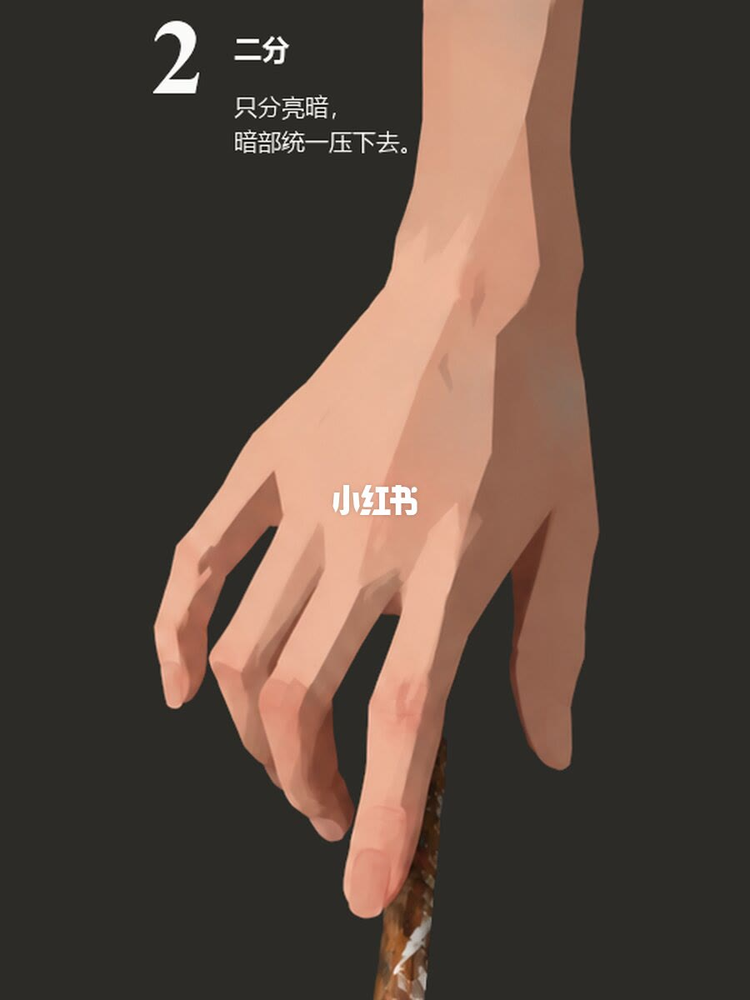
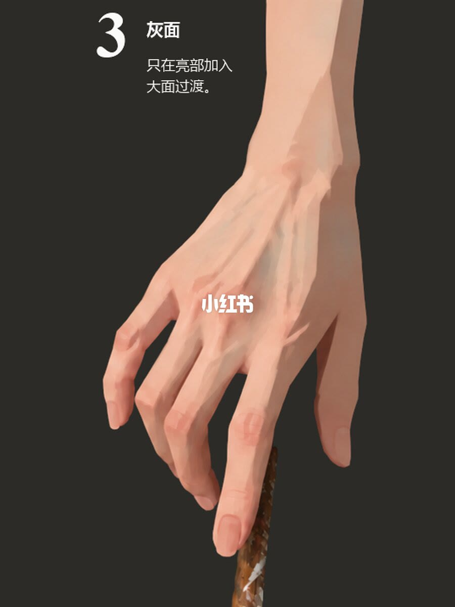
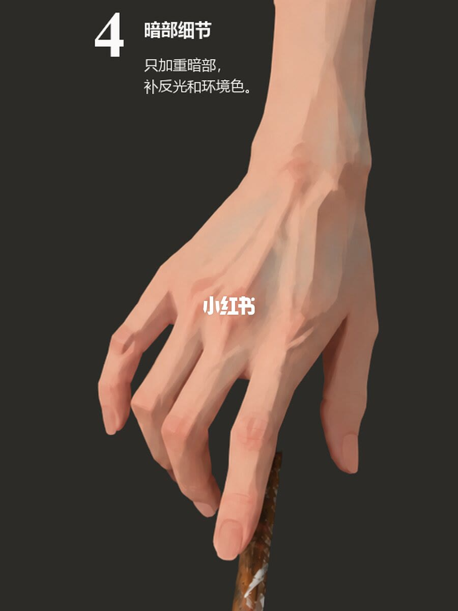
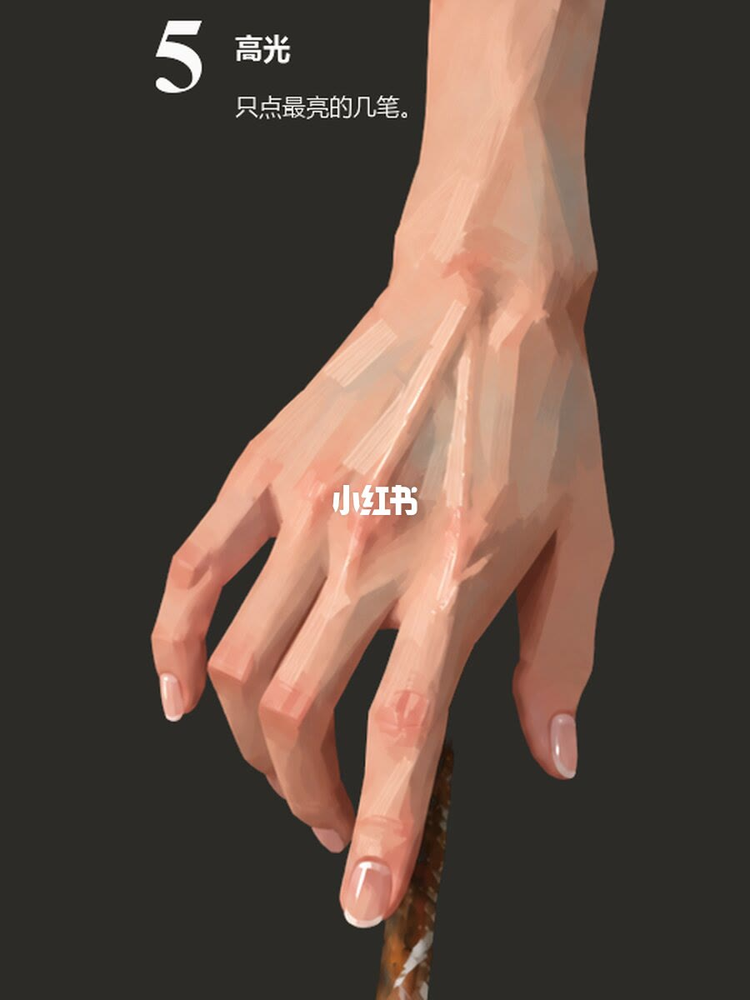
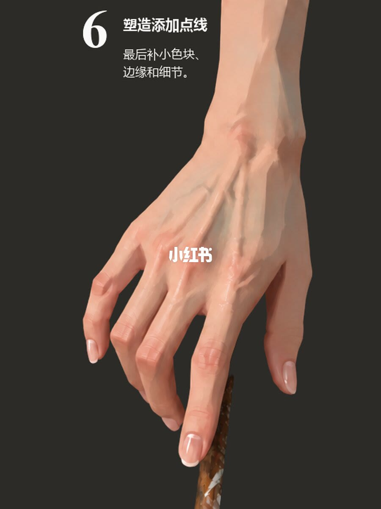

图文实录 · 小红书 · 杭州大云画室（翼帛）
六张图带你理清绘画步骤
标题要理清的是画一只手时每一步只动哪一层。顺序是：整手平涂固有色，再只分亮暗，再只在亮部加大面过渡，然后才加重暗部并补反光和环境色，高光只点最亮的几笔，最后补小色块、边缘、指甲和关节。笔记正文把同一顺序写得更窄：第三步暗部保持第二步不变，第四步不顺手画细亮部，第五步不大面积提亮。七页里第一页是六格总览，后六页各放大一步。步骤名和另一条小人偶笔记相同，这一套图画的是手。
1/7
六步放在同一张总览上
这一页是 2×3 的六格，深色底，同一只手背朝画面、手指朝下，指端接着一根细长的深褐色棒。格序是固有色、二分、灰面、暗部细节、高光、塑造添加点线。每格左上有步骤号。画面中部有小红书水印，压住的手背无法确认。格里的短句与后六页标题一致，整句以单页为准。棒是笔杆还是别的，总览上没有写。

2/7
固有色
图内标题是「1 固有色」。图上句子：先统一平涂，不考虑明暗。手是一块平的暖肤色剪影，内部没有亮面、灰面、暗面。腕从上方进入，手指朝下，指端接着那根深褐色细棒。手背中央压着白色「小红书」水印。笔记正文写：把整只手当成一个整体，先统一平涂，不急着找体积。这句话在正文里，不在画面标题上。左手还是右手、手指是否完全握紧，这一页无法确认。

3/7
二分
图内标题是「2 二分」。图上句子：只分亮暗，暗部统一压下去。亮部留着上一步的固有色，暗部收成一块更深的暖褐色，交界偏硬，灰面还没有铺开。体积靠这两块的位置读出来。笔记正文写：亮部保留固有色，暗部统一压下去，先把光影大关系立住。光源在画面哪一侧，图上没有标注，无法确认。水印盖住的手背中央无法确认。

4/7
灰面
图内标题是「3 灰面」。图上句子：只在亮部加入大面过渡。亮部里出现大块中间调，关节和手背的隆起开始转过去，交界比上一页更软。手背上沿手指方向的隆起能看出来；那是肌腱还是只是体面，图上没有标注，无法确认。笔记正文写：在亮部和明暗交界附近加入灰面，让体积慢慢转起来，暗部继续保持第二步不变。图上能确认亮部有了大面过渡。暗部有没有被改动，这一页无法和上一页逐块核对，按正文的许可，这一步停在亮部和交界附近。

5/7
暗部细节
图内标题是「4 暗部细节」。图上句子：只加重暗部，补反光和环境色。从这一页起暗部才被打开：最深处出现更重的小块，暗部边缘能读出偏冷的反光。哪一小块是反光、哪一小块是环境色，画面上没有标注，无法确认。色名页面也没有写。笔记正文写：只在最深的位置加暗中暗、反光和环境色，不要顺手把亮部一起画细。亮部在这一页仍保持前面的大面，没有被重新铺一遍。

6/7
高光
图内标题是「5 高光」。图上句子：只点最亮的几笔。关节高点、手背隆起和指甲上出现很小、很亮的笔触，边缘偏清楚。亮的是这些点，整片手背没有被提亮。高光是不是纯白，没有色值，无法确认。笔记正文写：只在最亮的位置加几笔，不要大面积提亮。水印仍压在手背中央。

7/7
塑造添加点线
图内标题是「6 塑造添加点线」。图上句子：最后补小色块、边缘和细节。指甲、关节转折和轮廓边缘被收了一下，手上出现少量小色块，前面五步的亮暗大关系还在。笔记正文写：补少量小色块、边缘线、指甲和关节转折，把手塑造完整。皮肤下面有没有画静脉，这一页没有文字，无法确认。细棒的名称仍然没有写出。

收尾
每一步只动被许可的那一层
结论：这只手按 2/7 到 7/7 分层。固有色把整手平涂成一块，二分只立亮暗，灰面只在亮部加大面过渡，暗部细节才进最深处并补反光和环境色，高光只点最亮的几笔，点线最后收小色块、边缘、指甲和关节。1/7 用来对有没有跳步。
支撑页：平涂在 2/7，亮暗两块在 3/7，亮部过渡在 4/7，暗部深处在 5/7，高光在 6/7，指甲和关节在 7/7。第三步「暗部保持第二步」、第四步「不顺手画细亮部」、第五步「不大面积提亮」写在笔记正文。图上第三步的句子是「只在亮部加入大面过渡」。
边界：七页只演示这一只手背朝下、指端接着细棒的画法。没有笔刷、色号和光比。光源在哪一侧无法确认。棒的名称无法确认。反光和环境色没有逐块标注。水印盖住的手背中央无法确认。图内编号是 1 到 6，实录页码要加一页总览。另一条笔记用同样的六步名称画小人偶，对象、短链和画面都不同；本页只按这一套手的图和这篇正文。